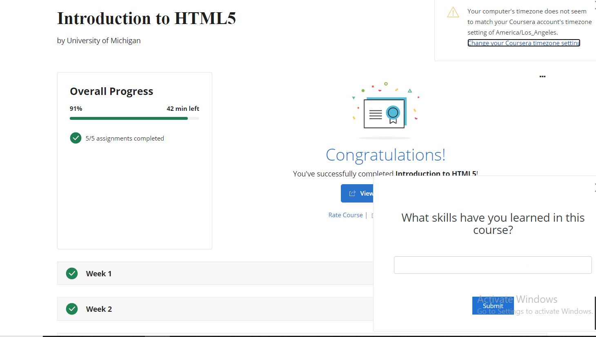

TO DO LIST.
So since, I am Muslim it's mandatory for muslim to pray five times a day.
So after praying i recite Quran. It's a book which was revealed by Allah swt on our last prophet Muhammad Saw. And its a really good deed and every muslim should atleast one page of quran daily.It was originally revealed in arabic language and its still read in rabic language bacuse arabic language is the very vast and eloquent language. And at that time arabic was known by almost everyone. And today we can get the translated version of quran in every language.As prophet Muhammad SAW said:
"The best of you are those who learn Quran and teach it.(to others)".
In shia muslim, Ziyarat e ashura holds a really strong place. It's a piece of dua recommended by Imam Muhammad Baqir(AS) who's fifth shia imam.In this dua we're pleding our allegiance to Imam Hussain(AS) that we'll not forget his sacrifice. And if islam is alive today oits because of him.
ZIYARAT E ASHURA.After praying and having lunch, I go and study today i just studied computer we learned about different software and its type.
After studying, I took a small break and watched some youtube and then prayed Magrib and Isha prayers.
That's what I am doing right now!!
If you guys dont know by now I am a total book nerd. Not trynna flex or something but I read 50 books last year which I'm kinda proud of.I read books from many genres. but my Favorite genre is definely Fantasy,Religious,nonfiction. I just recently got into non fiction genre.I feel like you have to do lot of research before going into nonfiction genre. Because there can be many books that can be really boring.THATS'S ONLY MY PERSONEL OPINION.
there are lot of my other favourute books but they are not coming to my mind right now.Personally, I think reading books is great I can definetly feel like my mind has become so matured and the way i now see world or think is otally different from previous years.And getting knowledge is a Great deed. As Imam Ali ibn abi talib says:
" Knowledge is better than wealth because it protects you, while you have to protect wealth."
One of my new year goal was to read peak of eloquence its basically a complition of sermons and letters of Imam Ali Ibn Abi Talib. And it's really eye opening there's a lot advices and hidden knowlege given to us by our Imam. And as his followers we shouldn't be heedless we should always be mindful of things and not folloow anything or anybody blindly. I am not really far into it I'm on sermon 28.
HERE'S A LINK TO A BOOK IN WHICH ALL SERMONS AND LETTERS ARE TRANSLATED FOR THOSE WHO'RE INTERESTED.| Name | rating | genre |
|---|---|---|
| The secret of sucess | 5/5 | religious. |
| the exemplerary women | 4.5/5 | Religious. |
| the darker shades of magic. | 4.5/5 | Fnatasy. |
| A gathering of shadows | 4/5 | Fantasy. |
I started doing this coure only few weeks ago.I am doing course on Html 5 which I find really interesting. And I'm almost done with it.
